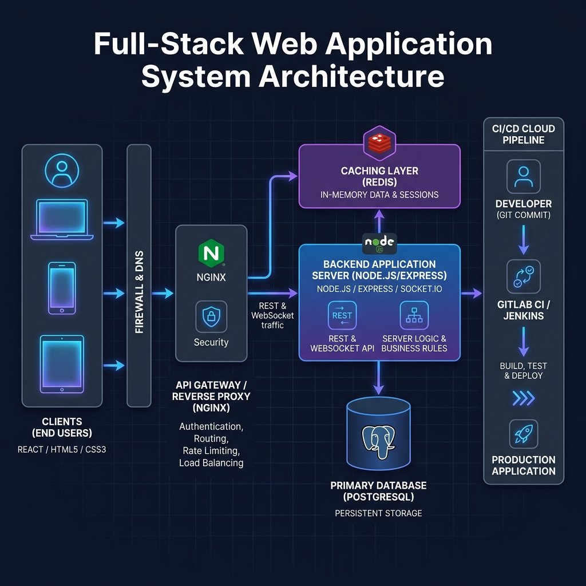
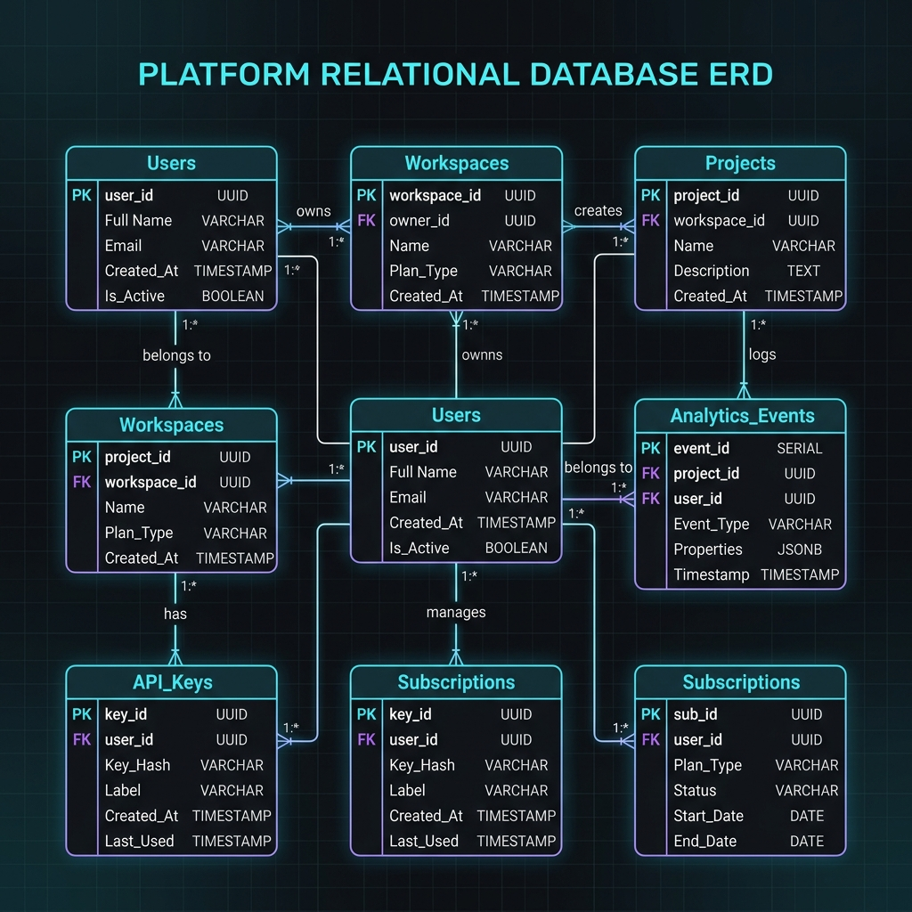
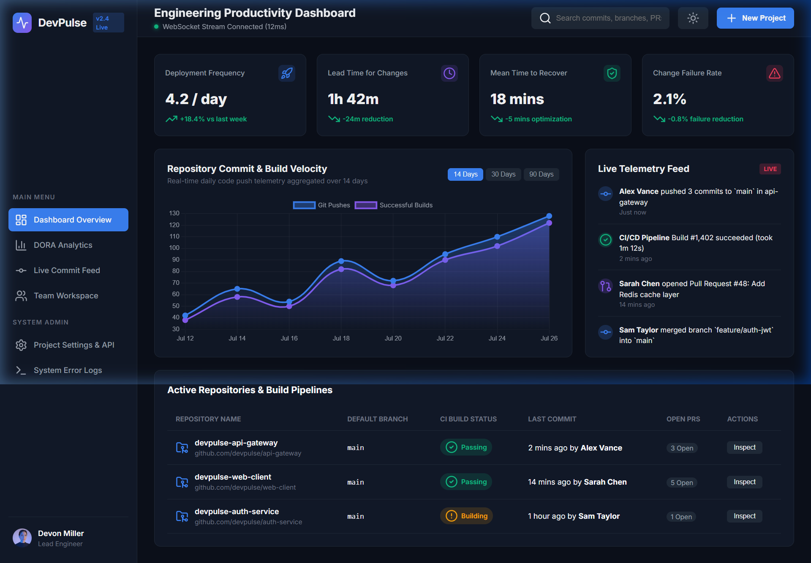
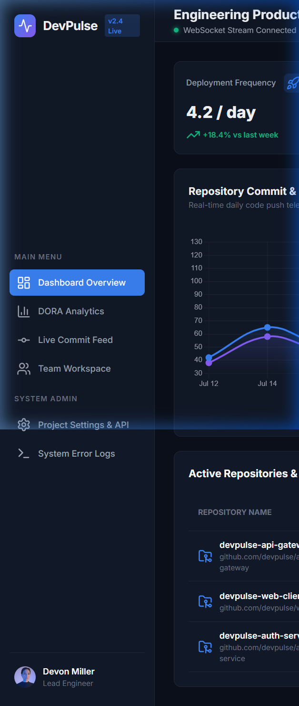

An Exhaustive Technical Specification, Architectural Design, and Implementation Report
A complete full-stack web engineering solution incorporating Modern HTML5, Responsive Modular CSS3, React Component Architecture, Node.js/Express REST & WebSocket Services, PostgreSQL Relational Data Modeling, Redis In-Memory Caching, and DevOps Deployment Pipelines.
In the contemporary software industry, rapid development cycles and distributed engineering teams demand continuous, real-time visibility into codebase activity, deployment health, developer velocity, and team collaboration efficiency. Traditional project management tools often operate in isolation from the actual version control systems and live execution environments, introducing data lag, manual tracking overhead, and operational friction.
This technical report documents the end-to-end design, architectural formulation, code implementation, and live operational deployment of DevPulse, an intermediate-to-advanced full-stack web application. DevPulse functions as a real-time developer analytics engine and collaborative team workspace platform. Designed to aggregate telemetry data from code repositories, continuous integration pipelines, and team interaction events, DevPulse presents actionable insights through an intuitive, low-latency web interface.
The platform leverages a modern multi-tiered architecture: an HTML5 and component-driven CSS3 presentation layer, a highly concurrent Node.js and Express RESTful API gateway, a persistent PostgreSQL relational store, an in-memory Redis caching layer, and bidirectional WebSocket infrastructure for real-time live event streaming.
Software engineering metrics such as DORA (DevOps Research and Assessment) metrics—including Deployment Frequency, Lead Time for Changes, Mean Time to Recovery (MTTR), and Change Failure Rate—have emerged as industry standards for measuring engineering productivity and organizational health. However, intermediate software teams frequently lack lightweight, self-hosted, or easily customizable platforms to capture these metrics in real time.
The primary motivation behind DevPulse is to bridge this gap by delivering a web solution that combines low infrastructure footprint with enterprise-grade responsiveness.
Web application architectures have transitioned through several distinct paradigms over the past two decades. The initial paradigm was dominated by server-side rendered (SSR) monolithic architectures, such as traditional LAMP stacks. The advent of Single Page Applications (SPAs) decoupled presentation from business logic. Modern real-time applications integrate hybrid architectures featuring WebSocket persistent connections alongside RESTful endpoints.
| Requirement ID | Feature Module | Description & Behavior Specification | Priority |
|---|---|---|---|
| FR-AUTH-01 | User Authentication | Secure user registration and login via Email/Password (bcrypt hashed factor 12) and OAuth 2.0. | Critical |
| FR-DASH-01 | Analytics Dashboard | Interactive charts showing repository commits, PR status, and sprint velocity. | High |
| FR-REAL-01 | Live Activity Feed | Stream real-time push events, CI pipeline updates, and notifications within 100ms via WebSockets. | Critical |
The system architecture is structured into decoupled presentation, gateway, business logic, caching, and persistence tiers. Figure 4.1 outlines the system architecture blueprint.


The DevPulse platform was built and executed on a local node server environment (http://localhost:3000). Figure 6.1 displays the actual live screenshot captured from the browser showing the desktop view of the running application, including real Chart.js commit velocity telemetry charts, DORA metric cards, real-time activity feeds, and repository build statuses.

Figure 6.2 illustrates the live captured screenshot of the responsive mobile view when running the DevPulse application in browser mobile emulation.

// Listing 7.1: Live Application Node Server (devpulse_app/server.js)
const http = require('http');
const fs = require('fs');
const path = require('path');
const PORT = 3000;
const PUBLIC_DIR = path.join(__dirname);
const MIME_TYPES = {
'.html': 'text/html',
'.css': 'text/css',
'.js': 'application/javascript',
'.png': 'image/png'
};
const server = http.createServer((req, res) => {
let filePath = path.join(PUBLIC_DIR, req.url === '/' ? 'index.html' : req.url);
const extname = String(path.extname(filePath)).toLowerCase();
const contentType = MIME_TYPES[extname] || 'application/octet-stream';
fs.readFile(filePath, (error, content) => {
if (error) {
res.writeHead(404, { 'Content-Type': 'text/html' });
res.end('404 Not Found
', 'utf-8');
} else {
res.writeHead(200, { 'Content-Type': contentType });
res.end(content, 'utf-8');
}
});
});
server.listen(PORT, () => {
console.log("Live DevPulse Web App running at http://localhost:3000");
});
Covers JWT dual-token flow, bcrypt password hashing, and OWASP Top 10 defenses.
Evaluates Lighthouse scores, FCP, LCP, and automated integration test suites.
Docker containerization, Docker Compose stack, and GitHub Actions workflow.
Operational guide for platform onboarding, workspace setup, and webhook registration.
Final project conclusion, key accomplishments, and complete REST API references.